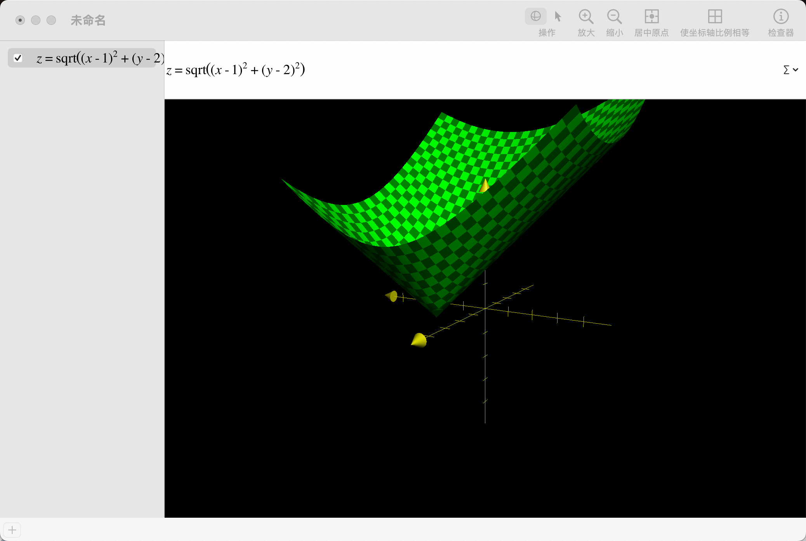
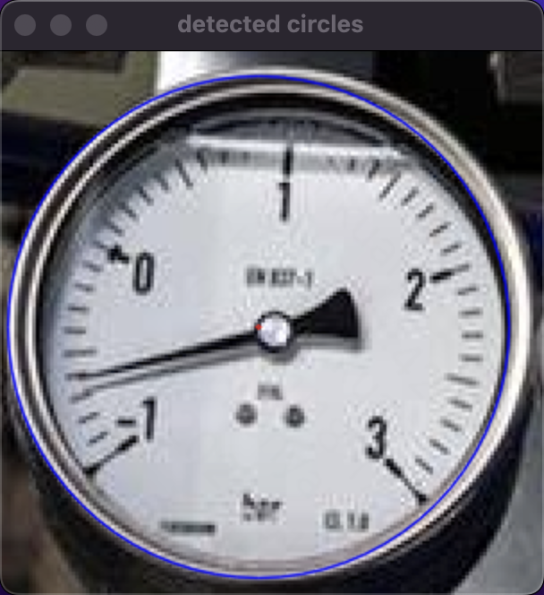
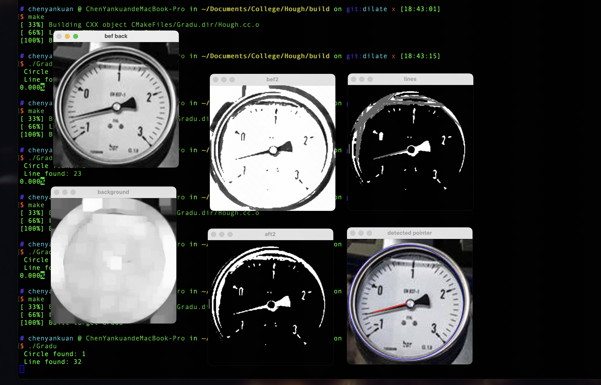
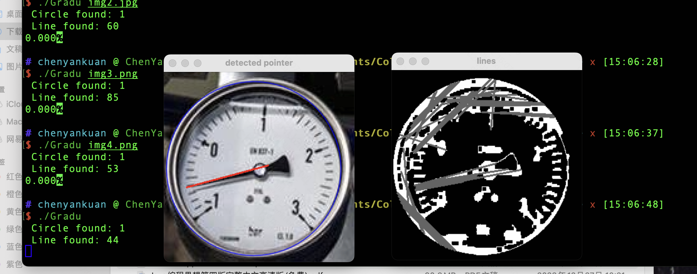

学习笔记 毕设 [图像处理]
做毕设，留个记录
总的思路大概就是先用yolo识别出所有表盘
- 指针式的拉伸成正方形，做 Hough 圆检测裁出表盘，做直线检测找出指针，把表盘周围拉成直线，找出刻度范围，给出指针所在的量程占比
- 数字式的大概要做 crnn ，晚点再说吧
Hough 直线检测
在图像上识别出直线，即给一些离散的点，求出直线的方程，懂了
回归直线（回归分析无法处理多条直线，而且计算复杂）
\[ y = kx + b \]
具体思路是从 \([x, y]\) 空间转换到 \([k, b]\) 空间，把点 \((x_0, y_0)\) 映射为直线 \(b = - x_0k + y_0\) ，源空间直线上的点映射出的直线的交点 \((k_0, b_0)\) 就是源直线的参数了，多个交点说明有多条直线，交点的范围说明直线的粗细等等。
opencv 接口：
1 | HoughLinesP(dst, lines, 1, CV_PI / 180, 80, dst.rows / 5, dst.rows / 60); |
Hough 圆检测
\[ (x - a)^2 + (y - b)^2 = r^2 \]
和直线检测的思路差不多，映射到 \([a, b, r]\) 的三维空间，经过一个点的所有圆在这个空间构成一个三维曲面（实际上就是一个倒圆锥），某一个区域的交点够多就认为是一个圆。

原始算法太麻烦，要求三维曲线的交点，opencv
的做法实际是利用边缘检测算法对每个像素求切线，对切线向内的垂线找交点，确定为圆心。再对上述的点算距离，确定半径。
opencv 接口：
1 | HoughCircles(gray, circles, HOUGH_GRADIENT, 1, // 要处理的图片，返回的结果vector<Vec3f> |

边缘检测
也许我可以利用边缘检测的结果去找刻度线范围。
背景光线补偿的二值化
仪表的阴影情况十分复杂，且各个仪表的亮度差异较大，尤其是指针本身可能投下极为相近的阴影，导致直接二值化效果很差。
采用背景光线补偿的方式对阴影进行修正：遍历图像中的每个点，以其周围 \(win_2\) 区域内最亮的 \(x\) 个点的均值为这个点处的背景，生成背景图。然后在灰度图像中减去背景图的影响即可极大增强二值化的效果。

此方法在指针较粗的情况下为防止指针本身被判断为背景，会导致背景图的精细度太粗，效果有所下降。但与旧版用边缘检测再膨胀腐蚀的方法相比提升效果仍十分显著。此图直接二值化更是灾难，因为阴影下部分前景的亮度比光照下的背景亮度还低。
